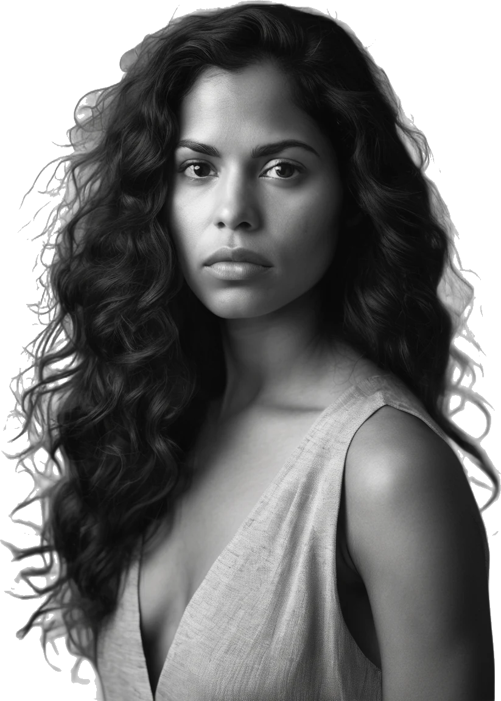
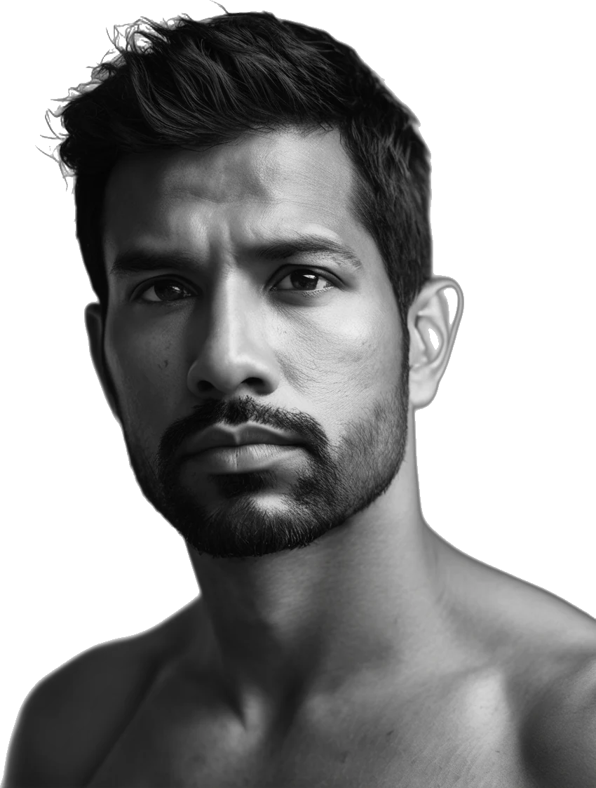
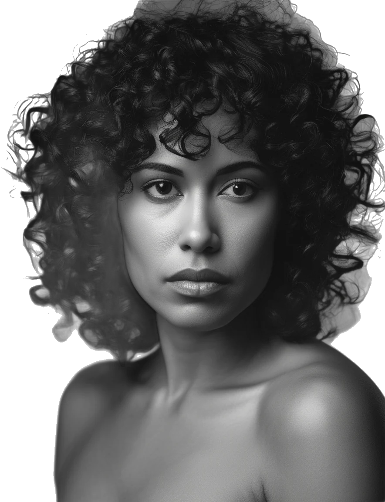

CONTRADICCIÓN PRESENTA:
RELATOS INTENSOS PARA MENTES TRAVIESAS
…nunca lo he dicho.
UN TEATRO PEQUEÑO · BOGOTÁ




10 monólogos · 5 distintos cada noche
Escritos y actuados por quien los vivió
Alguien tenía que decirlo.
FEBRERO 2027 · 8:00 P. M.Teatro Cofal · Bogotá · Boletas en Tickean@contradiccionarteatro